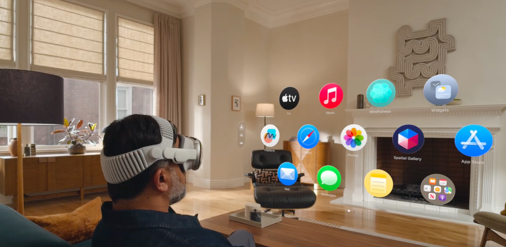
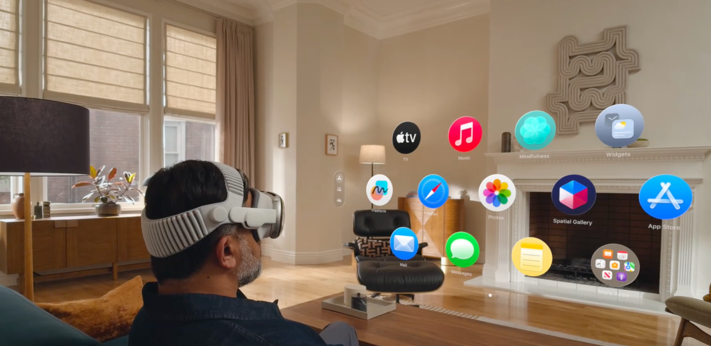

¿Por qué he elegido este dispositivo?
Apple Vision Pro es un visor de realidad mixta (AR/VR) que inaugura la “computación espacial”. Su interfaz se controla con la mirada (seguimiento ocular), gestos de mano (pellizco para seleccionar y desplazamiento para scroll) y comandos de voz. Esto reduce la fricción frente a mandos tradicionales y acerca la interacción digital a gestos cotidianos.
- Interacción: ojos + manos + voz (sin mandos)
- Accesibilidad: VoiceOver, Zoom y control por voz
- Pantallas: micro‑OLED de alta densidad
- Sistema: visionOS (interfaz espacial en 3D)
Beneficios que aporta
- Interacción natural: mirar y pellizcar acelera la selección y reduce la carga cognitiva.
- Contexto espacial: ventanas y apps ancladas al mundo real mejoran la memoria espacial.
- Colaboración inmersiva: revisión de modelos 3D y presentaciones envolventes.
- Accesible: controles por voz y ayudas integradas para más inclusión.
Casos de uso
- Educación y formación con simulaciones 3D.
- Diseño e ingeniería a escala real en el entorno.
- Salud: visualización médica y apoyo remoto.
- Productividad: pantallas virtuales “infinitas”.
Cómo ha evolucionado (qué sustituye y mejora)
- Del escritorio 2D (ratón/teclado) a espacios 3D con seguimiento de cabeza y manos.
- De visores VR tempranos (Oculus, HoloLens, etc.) a realidad mixta con passthrough de alta fidelidad.
- De mandos a ojos/manos/voz, eliminando controladores dedicados.
- Mejoras: mayor resolución, menor latencia y foco en accesibilidad.
Fotos
 

Coloca tus fotos reales como galeria1.jpg, galeria2.jpg y galeria3.jpg en la carpeta /img.
Más información (URLs)
Créditos y notas
Proyecto realizado con HTML + CSS + JS. Para tus fotos, solo reemplaza los archivos en /img con el mismo nombre.